原文连接:https://www.cnblogs.com/cjsblog/p/11585145.html
Prometheus（译：普罗米修斯）用领先的开源监控解决方案为你的指标和警报提供动力（赋能）。
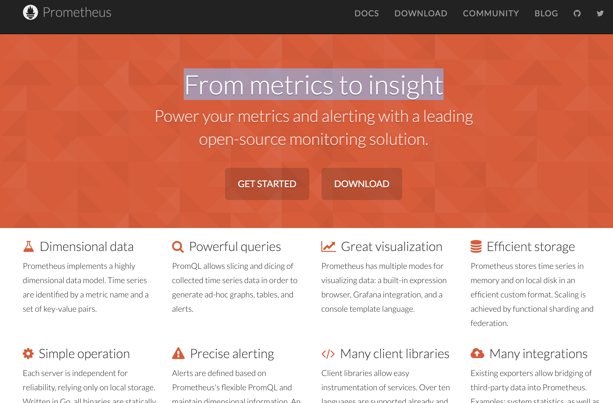
1. 概述
1.1. Prometheus是什么？
Prometheus是一个开源的系统监控和警报工具包。自2012年启动以来，许多公司和组织都采用了Prometheus，该项目拥有非常活跃的开发人员和用户社区。它现在是一个独立的开源项目，独立于任何公司进行维护。Prometheus于2016年加入云原生计算基金会，成为继Kubernetes之后的第二个托管项目。
1.1.1. Prometheus的主要特性：
- 一个多维数据模型，包含由指标名称和键/值对（Tag）标识的时间序列数据
- PromQL是一种灵活的查询语音，用于查询并利用这些维度数据
- 不依赖分布式存储，单个服务器节点是自治的
- 时间序列收集是通过HTTP上的pull模型进行的（支持Pull）
- 推送时间序列是通过一个中间网关来支持的（也支持Push）
- 目标是通过服务发现或静态配置发现的
- 多种模式的图形和仪表盘支持
总结一下，就是多维数据模型、PromQL查询语言、节点自治、HTTP主动拉取或者网关主动推送的方式获取时间序列数据、自动发现目标、多种仪表盘支持
1.1.2. 组件：
- Prometheus server，它负责抓取和存储时间序列数据，是最主要的组件
- client libraries，用于检测应用程序代码的客户端库
- push gateway，用于支持短期的jobs
- exporters，用于支持HAProxy等第三方
- alertmanager，用于处理告警
- 各种支持工具
大多数Prometheus组件都是用Go编写的，这使得它们易于作为静态二进制文件构建和部署
1.1.3. 架构：
这张图展示了架构及其生态系统的一些组成部分：

Prometheus从工具化的作业中获取指标，要么直接获取，要么通过中介推送网关获取短期作业。它在本地存储所有抓取的样本，并对这些数据应用规则将这些数据进行聚合，并记录新的时间序列，或者生成警报。可以用Grafana或其他API来可视化收集的数据。
1.2. 什么时候用它合适
Prometheus可以很好地记录任何纯数字时间序列。它既适合以机器为中心的监视，也适合高度动态的面向服务的体系结构的监视。在微服务的世界中，它对多维数据收集和查询的支持是一个特别的优势。
Prometheus是为可靠性而设计的，在你的服务宕机的时候，你可以快速诊断问题。每台Prometheus服务器都是独立的，不依赖于网络存储或其他远程服务。
1.3. 什么时候用它不合适
Prometheus的值的可靠性。你总是可以查看有关系统的统计信息，即使在出现故障的情况下也是如此。如果你需要100%的准确性，例如按请求计费，Prometheus不是一个好的选择，因为收集的数据可能不够详细和完整。在这种情况下，最好使用其他系统来收集和分析用于计费的数据，并使用Prometheus来完成剩下的监视工作。
1.4. Prometheus VS InfluxDB
InfluxDB是一个开源的时间序列数据库，具有扩展和集群的商业选项。InfluxDB项目是在Prometheus开发开始将近一年后发布的，所以当时无法考虑将其作为替代方案。尽管如此，Prometheus和fluxdb之间仍然存在显著的差异。二者有许多相似之处。两者都有标签(在InfluxDB中称为tags)来有效地支持多维度度量。它们基本上使用相同的数据压缩算法。两者都具有广泛的集成，包括彼此之间的集成。两者都有挂钩，允许进一步扩展它们，例如在统计工具中分析数据或执行自动化操作。
下列情况，用InfluxDB更好：
- 如果你正在进行事件日志记录
- 商业选项为InfluxDB提供集群，这对于长期数据存储也更好
- 最终实现副本之间数据的一致性
下列情况，用Prometheus更好：
- 如果你主要做的是度量
- 如果你需要更强大的查询语言、警报和通知功能
- 更高的可用性和正常运行时间，用于绘图和报警
InfluxDB由一家遵循开放核心模型的商业公司维护，提供高级特性，如闭源集群、托管和支持。
Prometheus是一个完全开源和独立的项目，由许多公司和个人维护，其中一些还提供商业服务和支持。
2. 基本概念
2.1. 数据模型
Prometheus基本上将所有数据存储为时间序列：属于同一指标和同一组标记维度的时间戳值流。除了存储时间序列外，Prometheus还可以根据查询结果生成临时派生的时间序列。
（PS：这里对时间序列的解释是这样的，
time series: streams of timestamped values belonging to the same metric and the same set of labeled dimensions
）
2.1.1. Metric names and labels
Every time series is uniquely identified by its metric name and optional key-value pairs called labels.
（每个时间序列都由其指标名称和称为标签的可选键值对唯一标识）
指标名称指定要度量的系统的一般特性（例如，http_requests_total表示接收的HTTP请求的总数）。它可能包含ASCII字母和数字，以及下划线和冒号。它必须匹配正则表达式[a-zA-Z_:][a-zA-Z0-9_:]*
标签名称可以包含ASCII字母、数字和下划线。它们必须匹配正则表达式[a-zA-Z_][a-zA-Z0-9_]*。以__开头的标签名称保留内部使用。
标签值可以包含任何Unicode字符。
2.1.2. Sample（样本）
样本构成实际的时间序列数据。每个样本包括：
- a float64 value
- a millisecond-precision timestamp
2.1.3. notation（记法）
给定一个度量名称和一组标签，时间序列通常使用以下符号标识：
<metric name>{<label name>=<label value>,...}例如，有这样一个时间序列，指标名称是api_http_requests_total，有两个标签method="POST"和handler="/messages"，那么这个时间序列可以这样写：
api_http_requests_total{method="POST", handler="/messages"}2.2. metric types（指标类型）
2.2.1. Counter（计数器）
计数器是一个累积指标，它表示一个单调递增的计数器，其值只能在重启时递增或重置为零。例如，可以使用计数器来表示已服务的请求数、已完成的任务数或错误数。不要使用计数器来反映一个可能会减小的值。例如，不要使用计数器表示当前正在运行的进程的数量，这种情况下，你应该用gauge。
2.2.2. Gauge（计量器）
计量器表示一个可以任意上下移动的数值。
计量器通常用于测量温度或当前内存使用量等，也用于“计数”，比如并发请求的数量。
2.2.3. Histogram（直方图、柱状图）
直方图对观察结果（通常是请求持续时间或响应大小之类的东西）进行采样，并在可配置的桶中计数。它还提供了所有观测值的和。
直方图用一个基本的指标名<basename>暴露在一个抓取期间的多个时间序列：
- 观察桶的累积计数器，格式为<basename>_bucket{le="<upper inclusive bound>"}
- 所有观测值的总和，格式为<basename>_sum
- 已观察到的事件的计数，格式为<basename>_count
2.2.4. Summary（摘要）
与柱状图类似，摘要样例观察结果（通常是请求持续时间和响应大小之类的内容）。虽然它还提供了观测值的总数和所有观测值的总和，但它计算了一个滑动时间窗口上的可配置分位数。
2.3. Jobs AND Instances（作业与实例）
在Prometheus的术语中，可以抓取的端点称为实例，通常对应于单个进程。具有相同目的的实例集合称为作业。
例如，一个API Server job 有4个副本instances：
job: api-server
- instance 1: 1.2.3.4:5670
- instance 2: 1.2.3.4:5671
- instance 3: 5.6.7.8:5670
- instance 4: 5.6.7.8:5671
2.3.1. 自动生成标签和时间序列
当Prometheus抓取目标时，它会自动在抓取的时间序列上附加一些标签，用来识别被抓取的目标：
- job：目标所属的已配置作业名称
- instance：<host>:<port>是被抓取的目标URL的一部分
3. 快速开始
Prometheus是一个开源的系统监控和警报工具包，具有活跃的生态系统。
3.1. 下载与安装
Prometheus是一个监控平台，它通过抓取这些目标上的HTTP端点来收集被监控目标的指标。
需要下载、安装并运行Prometheus。还需要下载并安装一个exporter，它是将主机和服务上的时间序列数据导出的工具。
https://prometheus.io/download/
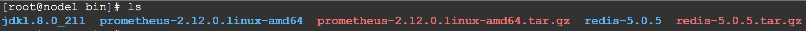
在运行Prometheus之前，我们先配置一下
3.1.1. 配置Prometheus监视它自己
Prometheus通过抓取目标上的HTTP端点数据来从被监控的目标收集数据。由于Prometheus也以同样的方式公开自己的数据，因此它还可以抓取和监测自己的健康状况。
虽然Prometheus服务器在实践中只收集关于自己的数据不是很有用，但是它是一个很好的开始示例。将以下基本的Prometheus配置保存为一个名为Prometheus.yml的文件：
1 global:
2 scrape_interval: 15s # By default, scrape targets every 15 seconds.
3
4 # Attach these labels to any time series or alerts when communicating with
5 # external systems (federation, remote storage, Alertmanager).
6 external_labels:
7 monitor: 'codelab-monitor'
8
9 # A scrape configuration containing exactly one endpoint to scrape:
10 # Here it's Prometheus itself.
11 scrape_configs:
12 # The job name is added as a label `job=<job_name>` to any timeseries scraped from this config.
13 - job_name: 'prometheus'
14
15 # Override the global default and scrape targets from this job every 5 seconds.
16 scrape_interval: 5s
17
18 static_configs:
19 - targets: ['localhost:9090']
3.1.2. 启动Prometheus
1 # Start Prometheus.
2 # By default, Prometheus stores its database in ./data (flag --storage.tsdb.path).
3 ./prometheus --config.file=prometheus.yml
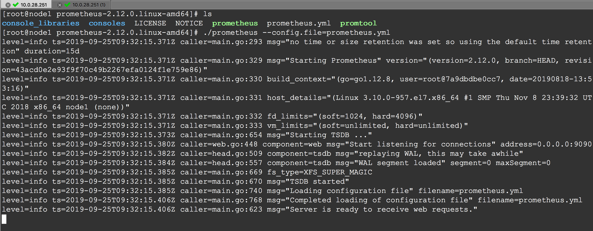
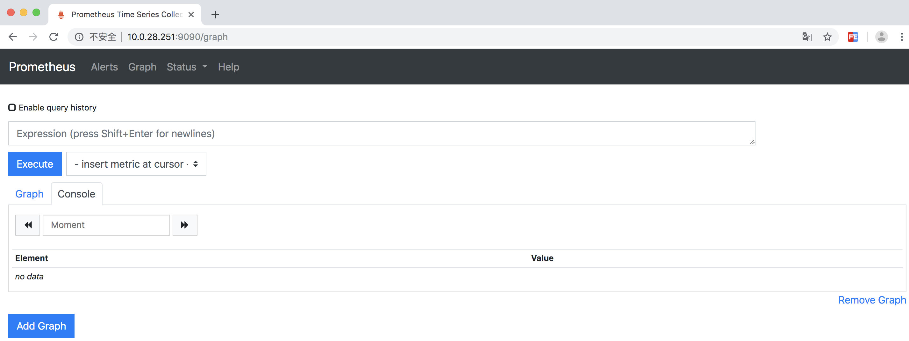
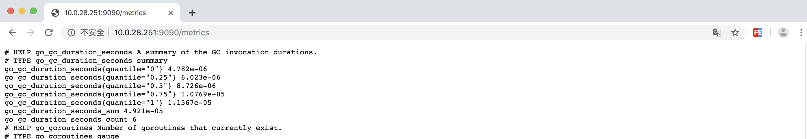
3.2. 配置
Prometheus可以通过命令行和配置文件进行配置。配置文件定义了与抓取作业及其实例相关的所有内容，以及要加载哪些规则文件。
运行./prometheus -h可以查看所有支持的命令
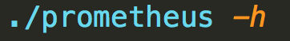
为了指定要加载哪个配置文件，请使用--config选项
配置文件是YAML格式的
配置项太多，不一一列举，自行查看
https://prometheus.io/docs/prometheus/latest/configuration/configuration/
global:
# How frequently to scrape targets by default.
[ scrape_interval: <duration> | default = 1m ]
# How long until a scrape request times out.
[ scrape_timeout: <duration> | default = 10s ]
# How frequently to evaluate rules.
[ evaluation_interval: <duration> | default = 1m ]
# The labels to add to any time series or alerts when communicating with
# external systems (federation, remote storage, Alertmanager).
external_labels:
[ <labelname>: <labelvalue> ... ]
# Rule files specifies a list of globs. Rules and alerts are read from
# all matching files.
rule_files:
[ - <filepath_glob> ... ]
# A list of scrape configurations.
scrape_configs:
[ - <scrape_config> ... ]
# Alerting specifies settings related to the Alertmanager.
alerting:
alert_relabel_configs:
[ - <relabel_config> ... ]
alertmanagers:
[ - <alertmanager_config> ... ]
# Settings related to the remote write feature.
remote_write:
[ - <remote_write> ... ]
# Settings related to the remote read feature.
remote_read:
[ - <remote_read> ... ] 这里有一个有效的示例配置文件
3.3. 查询
Prometheus提供了一种名为PromQL（Prometheus查询语言）的函数式查询语言，允许用户实时选择和聚合时间序列数据。表达式的结果既可以显示为图形，也可以在Prometheus的表达式浏览器中作为表格数据查看，或者通过HTTP API由外部系统使用。
3.3.1. 表达式数据类型
在Prometheus的表达式语言中，表达式或子表达式可以计算为以下四种类型之一：
- Instant vector（瞬时向量）：一组时间序列，每个时间序列包含一个样本，所有样本共享相同的时间戳
- Range vector（范围向量）：一组时间序列，其中包含每个时间序列随时间变化的数据点范围
- Scalar（标量）：一个简单的数值浮点值
- String（字符串）：一个简单的字符串值，目前未使用
3.3.2. 字面值
字符串字面值
字符串可以指定为单引号、双引号或反引号中的文字。例如：
1 "this is a string"
2 'these are unescaped: \n \\ \t'
3 `these are not unescaped: \n ' " \t` 浮点数字面值
例如：-2.34
3.3.3. 时间序列选择器
瞬时向量选择器
瞬时向量选择器允许在给定的时间戳（瞬时）上为每个时间序列选择一组时间序列和一个样本值：在最简单的形式中，只指定一个度量名称。这样一个向量就会包含这个度量名称的所有时间序列元素。
下面的例子，选择指标名称是http_requests_total的所有时间序列：
http_requests_total
通过在花括号({ })中添加一组匹配的标签，可以进一步过滤这些时间序列。
下面的例子，选择指标名称是http_requests_total，并且有job标签值是prometheus，并且group标签值是canary的时间序列：
http_requests_total{job="prometheus",group="canary"} 标签匹配操作符：
- = ： 选择与提供的字符串完全相同的标签（等于）
- != ：选择不等于提供的字符串的标签（不等于）
- =~ ：正则匹配
- !~ ： 非正则匹配
下面的例子，选择所有staging, testing, development环境，并且HTTP请求方式不是GET的http_requests_total时间序列
http_requests_total{environment=~"staging|testing|development",method!="GET"} 不要匹配空标签
{job=~".+"} # Good!
{job=~".*",method="get"} # Good!
3.3.4. 范围向量选择器
范围向量字面量的工作原理与瞬时向量字面量类似，只是它们从当前瞬时量中选择一个样本范围。从语法上讲，范围持续时间被添加到向量选择器末尾的方括号([ ])中，以指定应该为每个结果范围向量元素获取多少时间值。
时间期限指定为一个数字，紧接其后的是下列单位之一：s（秒）、m（分钟）、h（小时）、d（天） 、w（周）、y（年）
下面的例子，选择指标名是http_requests_total，且job标签值是prometheus的已经记录的最近5分钟内的时间序列：
http_requests_total{job="prometheus"}[5m]Offset修饰符
下面的表达式返回http_requests_total在过去5分钟相对于当前查询计算时间的值：
http_requests_total offset 5m 注意，offset总是紧跟在选择器后面的
sum(http_requests_total{method="GET"} offset 5m) 下面的例子，返回一周前的最近5分钟http_requests_total的时间序列
rate(http_requests_total[5m] offset 1w)
3.3.5. 子查询
Syntax: <instant_query> '[' <range> ':' [<resolution>] ']' [ offset <duration> ]
3.3.5. 运算符
Prometheus的查询语言支持基本的逻辑运算符和算术运算符。
算术二元运算符
+（加）、-（减）、*（乘）、/（除）、%（余数）、^（指数）
二进制算术运算符定义在标量/标量、向量/标量和向量/向量值对之间
比较二元运算符
== 、!= 、> 、< 、>= 、<=
逻辑运算符
and 、or 、unless
聚合运算符
sum（求和）、min（最小值）、max（最大值）、avg（求平均）、stddev（标准偏差）、stdvar（方差）、count（个数）、count_values（相同值的元素个数）、bottomk（样本值的最小元素）、topk（样本值的最大元素）、quantile（0 ≤ φ ≤ 1）
这些操作符既可以用于聚合所有标签维度，也可以通过包含without子句或by子句来保存不同的维度。
1 <aggr-op>([parameter,] <vector expression>) [without|by (<label list>)]
例如，假设http_requests_total有application 、 instance 、 group三个标签，那么下面两个是等价的：
1 sum(http_requests_total) without (instance)
2 sum(http_requests_total) by (application, group)
3.3.6. 函数
https://prometheus.io/docs/prometheus/latest/querying/functions/
3.3.7. 示例
1 # 返回http_requests_total的所有时间序列
2 http_requests_total
3
4 # 返回http_requests_total的且限定了job和handler标签的时间序列
5 http_requests_total{job="apiserver", handler="/api/comments"}
6 http_requests_total{job="apiserver", handler="/api/comments"}[5m]
7
8 # 正则表达式
9 http_requests_total{job=~".*server"}
10 http_requests_total{status!~"4.."}
11
12 # 过去的5分钟内每秒HTTP请求速率
13 rate(http_requests_total{job="api-server"}[5m])
14 # 过去的30分钟内每5分钟
15 rate(http_requests_total[5m])[30m:1m]
16 # 过去5分钟的所有请求速率求和，保留job维度
17 sum(rate(http_requests_total[5m])) by (job)
18 # cpu使用率最高的前3个
19 topk(3, sum(rate(instance_cpu_time_ns[5m])) by (app, proc))
4. Grafana支持
Grafana支持查询Prometheus
下面是Grafana dashboard查询Prometheus数据的例子:

使用
默认情况下，Grafana监听http://localhost:3000，默认用admin/admin登录
创建一个Prometheus数据源，接着创建面板并定义查询的指标
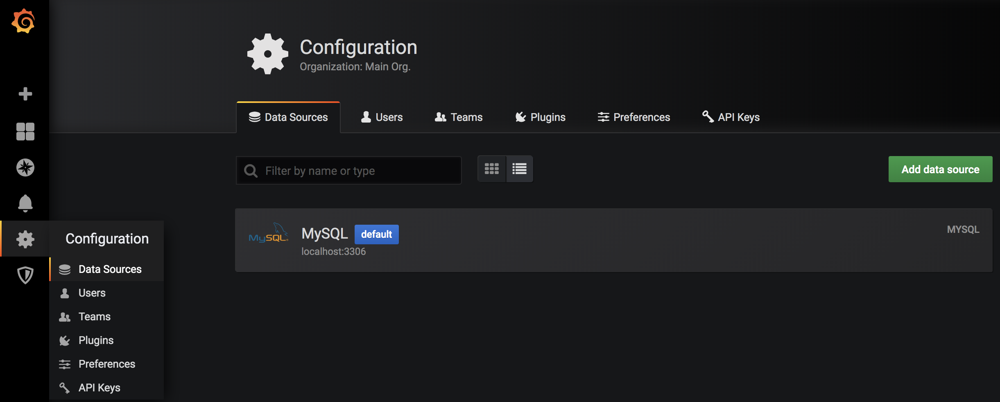
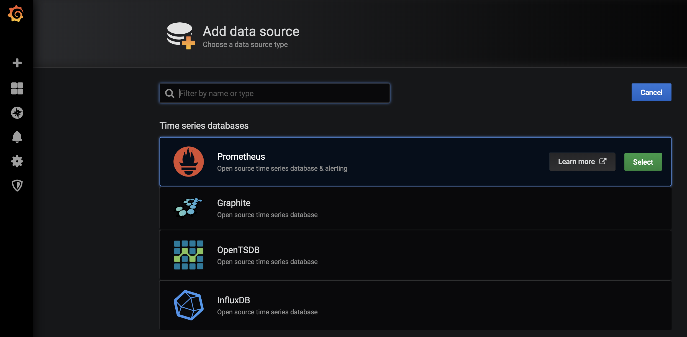
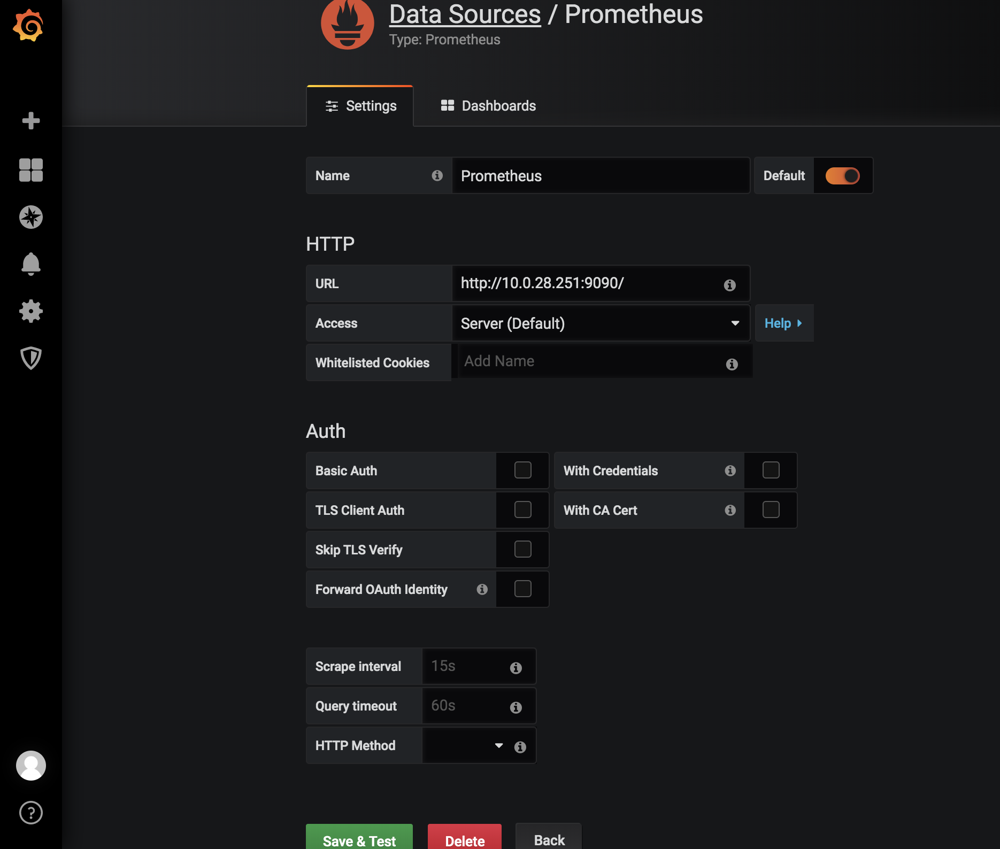
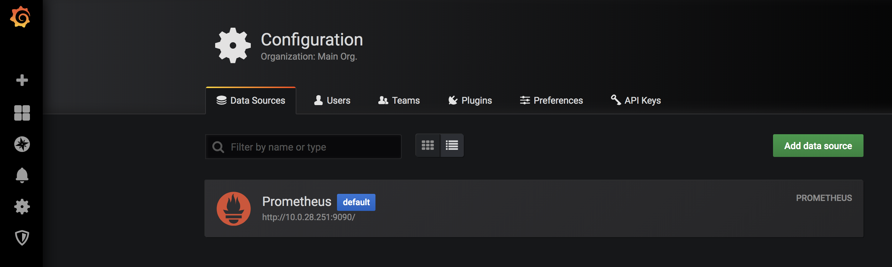
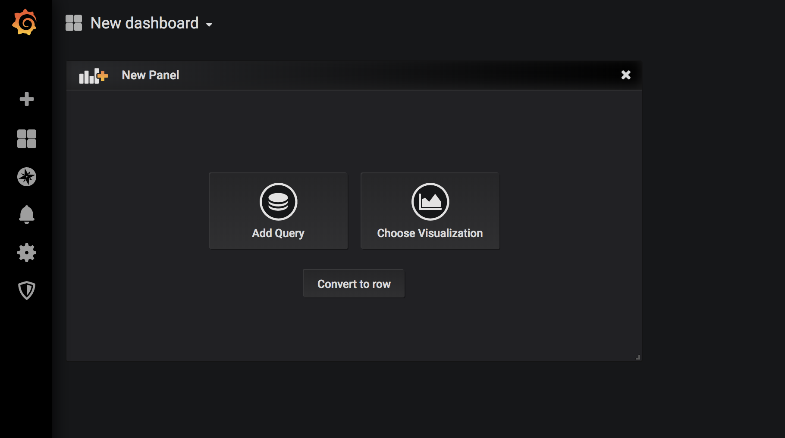
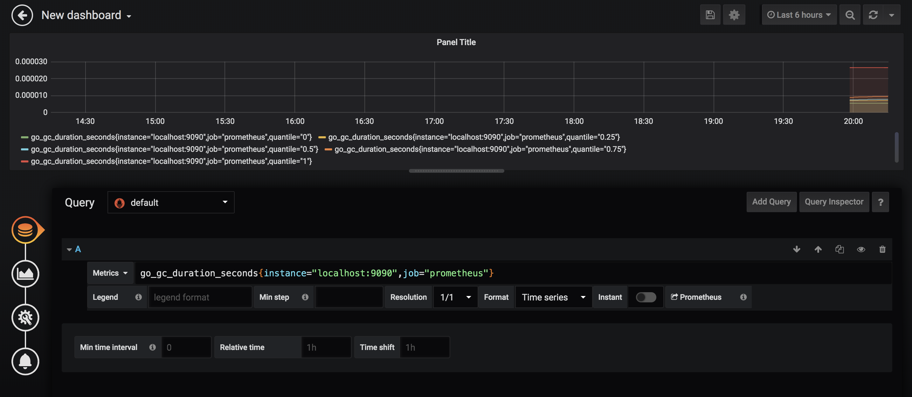
刚开始，如果不知道PromeQL怎么写，可以去Prometheus上去找 http://localhost:9090/graph
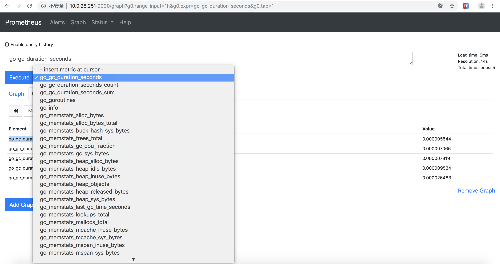
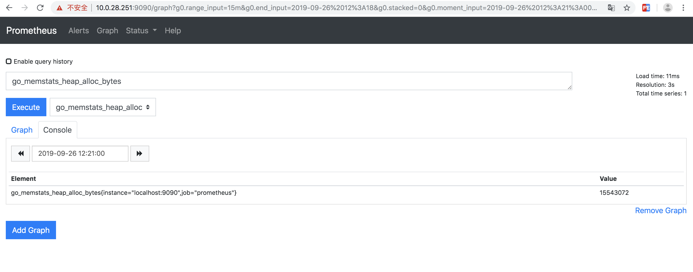
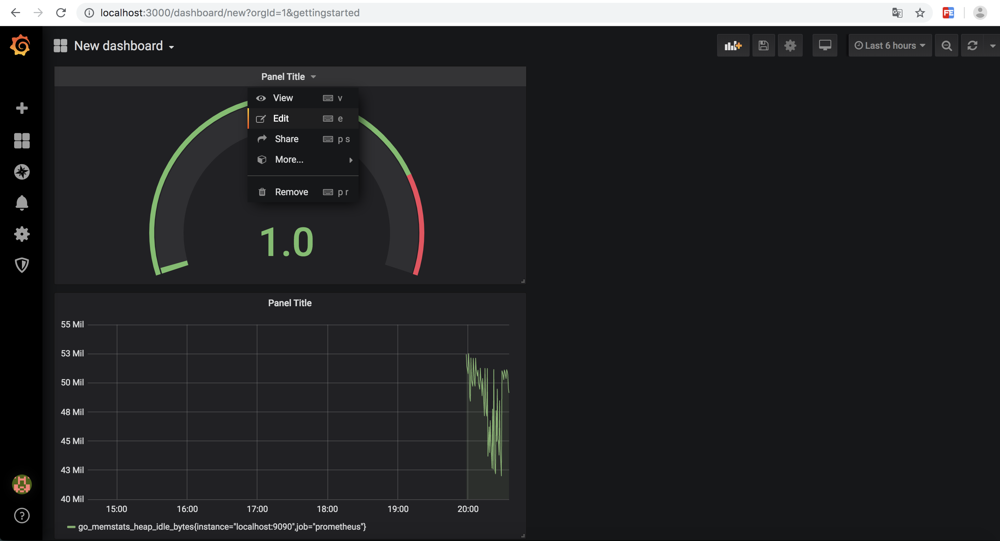
https://prometheus.io/docs/introduction/overview/
https://prometheus.io/docs/alerting/overview/